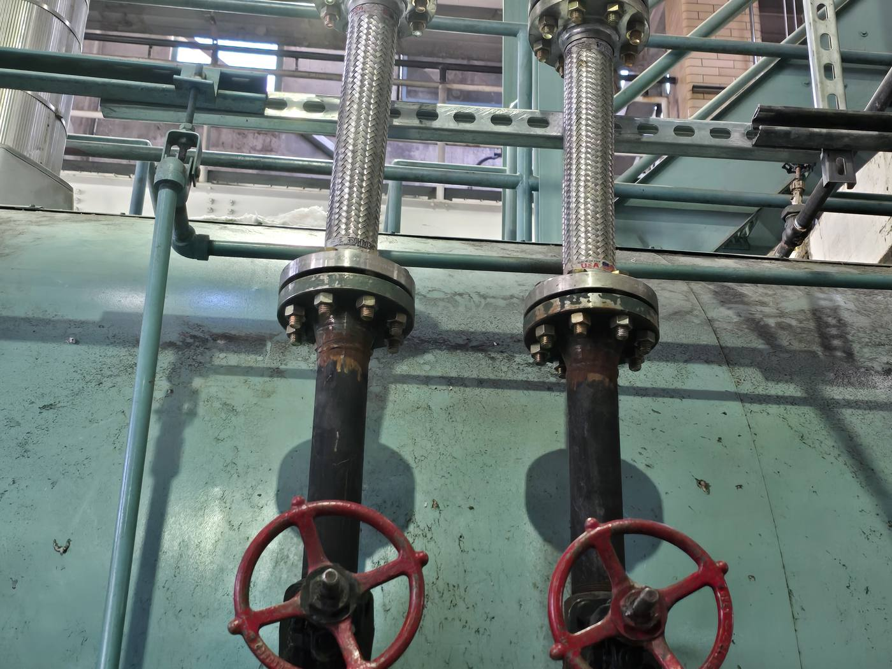
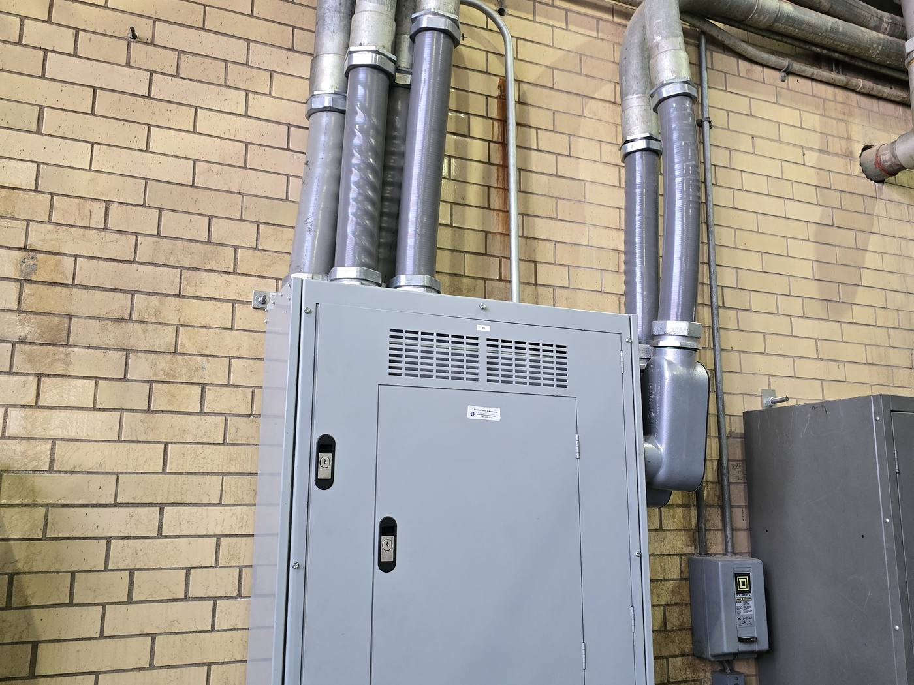

Why the plant is the hard case
A central plant is dense with heavy equipment: boilers, tanks, headers, switchgear, and miles of piping, all of it needing to stay anchored and operational through a seismic event. For a hospital the plant is classified as a critical facility, which means the bar is not do not collapse. It is keep working.
That is a different and higher standard, and it is the one the VA Seismic Design Handbook and ASCE 41 hold these buildings to. A structure can survive a quake intact and still be useless if the steam header it carries has torn loose.
Step one is evaluation, not steel
You cannot reinforce what you have not measured. At the Reno VA Medical Center we performed a comprehensive seismic evaluation of seven buildings to ASCE 41-13 and the VA handbook, assessing both structural and non-structural components and engineering retrofit recommendations for each.
At scale that work demands discipline. On a portfolio of 45 VA buildings across California, our team ran Tier-1 and Tier-2 assessments across a wide range of structural types and ages, using a tablet-based field application to catalog deficiencies in structure, MEP systems, architecture and even medical equipment, then engineered building-by-building retrofit recommendations.
What an actual reinforcement looks like
The East Orange VA boiler plant in New Jersey is a clean example. We evaluated the existing frame and its non-structural components, then designed the upgrades to bring the building into full compliance with current seismic codes and the VA Seismic Design Guide.
In practice that meant new walls to brace the building against sideways force, supported on piers, structural steel reinforcement at the roof, and seismic bracing on all piping and conduit so the systems survive the shaking rather than only the structure holding up around them.
The constraint nobody sees in the drawings
The hard part at East Orange was not the wall, it was where the wall had to go. The footing for the south wall landed right next to the subsurface tunnel connecting the plant to the main hospital. We made a site visit, worked the problem with the contractor, and developed a footing detail that cleared the tunnel without interrupting hospital operations. Seismic upgrades on a live campus are full of these, and they are where experience earns its keep.
Sometimes the answer is consolidation
Not every aging plant should be braced in place. At the Mather VA in California the right move was to consolidate aging steam and hot water boilers into a single central steam plant, demolishing twelve boilers, replacing the domestic hot water system, and running an ASCE 41 Tier-3 evaluation that included bridge modifications to optimize how the buildings interact during an event. The seismic work and the mechanical modernization were one project, because on a plant that old you cannot responsibly separate them.
The takeaway
If your central plant predates current seismic code, start with an evaluation. It tells you whether you are looking at targeted bracing, a structural reinforcement like East Orange, or a consolidation like Mather, before you spend a dollar of construction money guessing.


